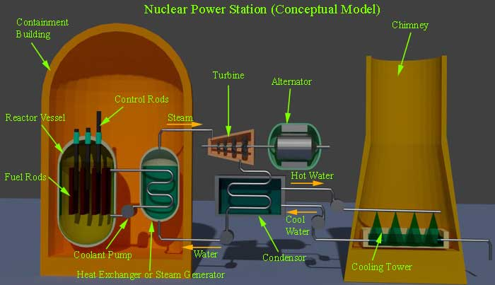

Frequency, Voltage and Interconnected System
Conventional Source of Electric Power Generation
Thermal Power
Hydal Power
Nuclear Power
Non Conventional Source of Electrical Power
Before Michael Faraday had discovered his famous law of electromagnetic induction, battery were the only source of electric power.
After that, DC generator was developed, but it could produce only a few hundred volts of electric power and naturally this low voltage power could not transmitted efficiently to a large distance. In the latter half of eighteen centuries, AC electric power generation, transmission and distribution came into the picture. In an AC system, it became possible to step up voltage of electric power to desire level for efficient transmission to a long distance. After that 3-phase induction motor was developed which was much simpler in construction. Generation, transmission and distribution of AC power were much easier than DC power; hence very fast AC power system became the most popular means of electric power.
Electric Power Generation
The AC power is generated in 3 phase system as 3-phase AC electric power generation is most economical. 3 phase AC generator is commonly known as the alternator. An alternator has balanced three phase winding on its stator and an electromagnetic field is rotated inside the stator. Due to this system, rotating magnetic field cuts the stator winding’s conductor and as a result, electricity is induced in the stator windings. From terminals of the stator three phase power is obtained. In an alternator, rotating electromagnet is energized by the DC source. The rotor is driven by some external means with the help of thermal, hydal, wind or other forms of energy. For example, in thermal power plant, the rotor of the alternator is rotated by means of a turbine shaft and the turbine is driven by means of high temperature and pressure steam. The steam is produced in a boiler by burning coal in the furnace.
As the stator winding is perfectly balanced, the three phase power produced in an alternator is also balanced that means phase difference between two conjugative phases is 120 degrees (electrical).
Frequency, Voltage and Interconnected System
If p is the number of poless and N is the RPM of an alternator, frequency of the generated voltage will be Np/120. In India the frequency of generated power or simply power frequency is 50 Hz. In USA it is 60 Hz. In modern power plants there are generally more than one number of alternators run in parallel. Not only in a single plant, may alternators, of other plants also be interconnected to run parallel. This arrangement improves flexibility and efficiency of the power system. When the power stations of different locations are interconnected by means of transmission lines, the total network is referred as a grid. In other word grid is a system by which alternators of all power plants connected to that grid run in parallel. If any of the alternators becomes out of service, still power can be fed by other alternators without affecting availability of the system. As many numbers of alternators are connected and run in parallel, the frequency and voltage of the system becomes much stable irrespective of degree of loading present in the system. The main drawback of the grid system is, when an alternator is connected to the grid, its frequency, voltage and phase sequence must match with that of the grid, and the process of matching the said parameters of alternator with the grid is not a simple task and the process is called synchronizing.
Conventional Source of Electric Power Generation
There are mainly three conventional source of electric power generation, and they are thermal hydal, and nuclear energy.
Thermal Power Generation
In thermal power plant coal or diesel is burnt to produce sufficient heat. This heat energy is utilized to produce high temperature and high pressure steam in the boiler.
Basic Component of Thermal Power Generating Unit
Hydal Power Generation
Here the water head is used to rotate the rotor shaft of an alternator. Water head can be naturally available or it can be created. In hilly region water head can be naturally available in the hill top natural lakes. In plain land, it can be created by constructing dams across suitable rivers. In comparing to a thermal power plant, hydel plants are more echo-friendly as they are free from fuel combustion. Also the running cost of hydal plant is much cheaper than that of thermal plants as there is no need of fuel to be burnt.
Basic Component of a Hydal Power Generating Unit
Although running cost of a hydal power plant is quite low, but initial constructional cost of this plant is quite high as compared to thermal power plant. As because, there is huge involvement of money in construction of dams and other necessary civil buildings. Water turbine generally runs at a low speed, hence number of poles in the generator is higher to achieve fixed 50 Hz power frequency. The number of pole in a hydal alternator may be up to 20 or more.
Nuclear Power Generation
It is estimated that, the coal reserve of our country will be exhausted within next 40 years if the coal is continued to be consumed in present rate. The solution of this situation is a nuclear power plant as thought. In a nuclear power station, Uranium 235 is subjected to nuclear fission. In fission process, U 235 is bombarded by a beam of neutrons. The collision of neutrons with the nucleus of U 235 creates huge heat energy along with other neutrons. These newly created neutrons are called fission neutrons which again hit by other U 235 nuclear and create mare heat energy and other fission neutrons. During fission process the nucleus of U 235 is divided into two parts. The fission process is commutative in nature. That is why, a nuclear reaction is a chain reaction and hence it should be allowed to be occurred in a controlled manner. The moderates and control rods are used to control this chain reaction.

Moderates are used to reduce the velocity of neutrons and control rods are used to absorb neutrons for maintaining, required number of neutrons for the process. Moderates are made of heavy water or pure carbon and control rods are made of cadmium or boron steel. The speed of the nuclear reaction can be controlled by inserting control rods up to a desire deep into the reaction chamber. By pushing down and pulling up the control rods, the output of the nuclear generating plant is controlled. Although this process is not manual, it is controlled by the automatic feedback control system. The heat generated during fission is taken out from the reactor by means of coolant consisting of liquid sodium or some gaseous fluids. The coolant is circulated between heat exchanger and the reactor. It takes heat from the reactor and gives the heat to the water in the heat exchanger. Thus the water in the heat exchanger is converted to high pressure and high temperature steam. This steam then drives a turbine and exhausts into a condenser where it is condensed into water and cooled down for re- feeding to the heater changes again via a feed water pump. The main advantage of nuclear power plant is its minimum fuel consumption. It has been observed that for running a 1000 MW thermal power plant, nearly 6 X106 kg of coal to be burnt every day, whereas in a nuclear power plant only 2.5 kg of Uranium to be consumed daily for getting same output. But the initial investment of nuclear power plant is quite high. It produces electricity without causing any air pollution, but, it has always a chance of radiation hazard because of leakage in reactor chamber. Another major disadvantage of this plant is its disposals, as because its disposals are not free from radioactivity.
Non Conventional Source of Electrical Power Generation
Although the main sources of electric power generation are thermal, hydal, and nuclear power plants, but still there are many other non conventional sources of power available. These non conventional sources, like wind power, solar power, MHD generation, fuel cell, etc. are becoming the promising alternative sources for electric power generation.
 by
by